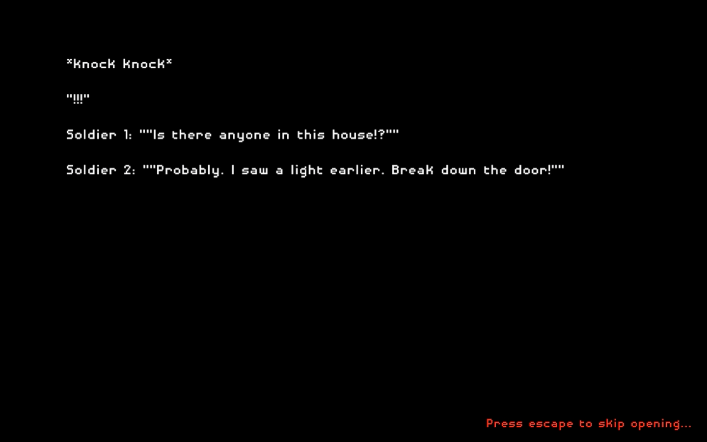
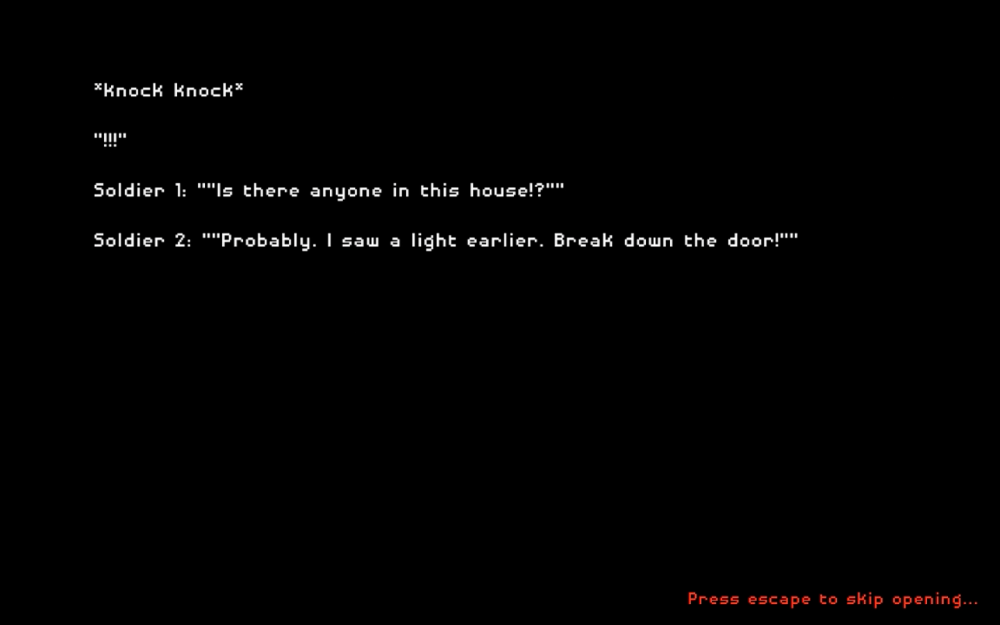
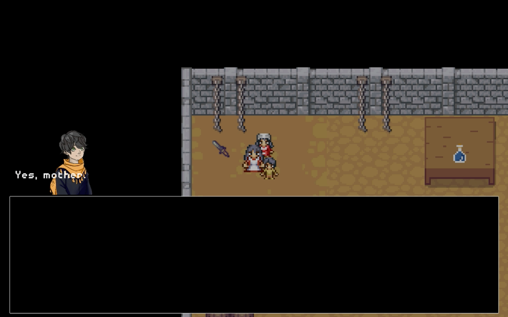
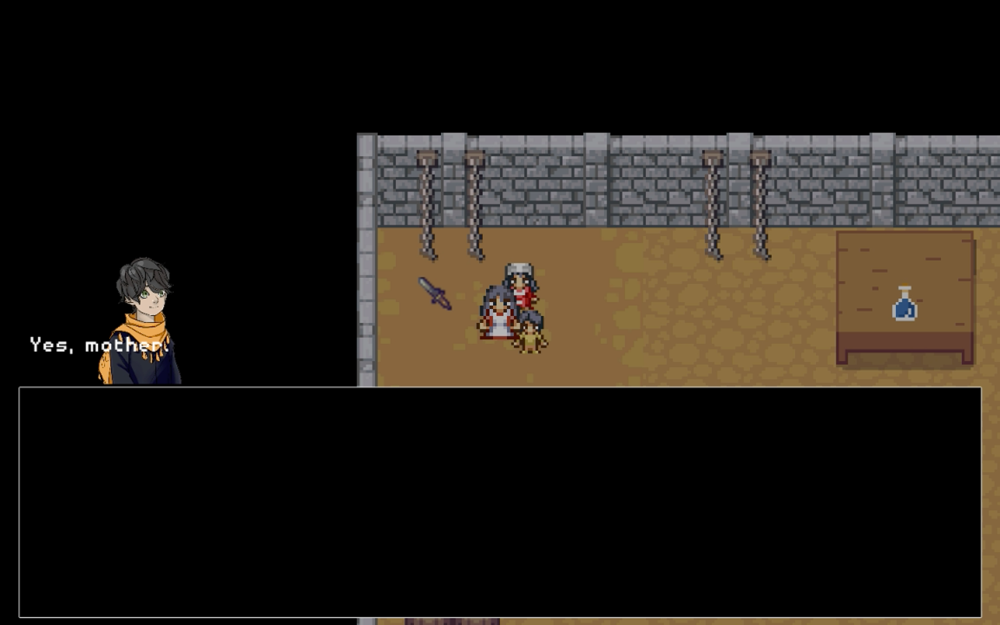

Team Little Ducks: Salam
Salam is a top-down, 2.5d, narrative driven adventure game with stealth elements where you take the role of a struggling mother trying to survive in a war-torn country with her two children.
Download Game (PC)

Download Game (Mac)

Download Game Proposal

 


 
